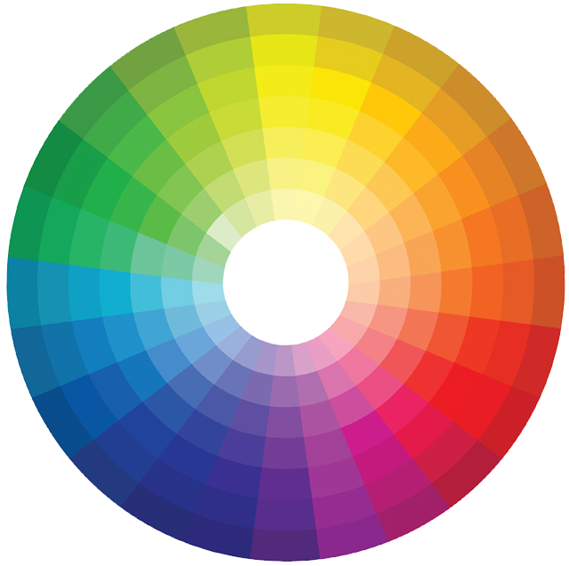
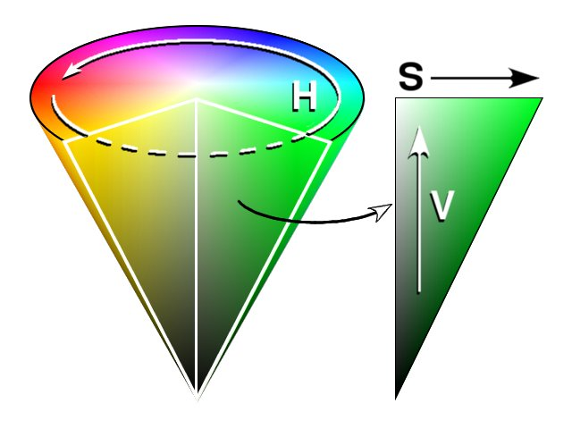
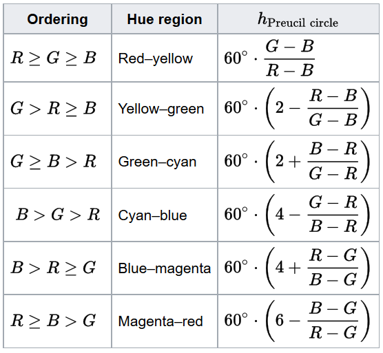

A World of Hues
Color speaks louder than words
Hues
Color
Color is the characteristic of human visual perception described through color categories, with names such as red, yellow, purple, or blue. This perception of color derives from the stimulation of cone cells in the human eye by electromagnetic radiation in the spectrum of light. Color categories and physical specifications of color are associated with objects through the wavelength of the light that is reflected from them.
The RGB color space corresponds to human trichromacy and to the three cone cell types that respond to three bands of light: long wavelengths, peaking near 564–580 nm (red); medium-wavelength, peaking near 534–545 nm (green); and short-wavelength light, near 420–440 nm (blue).
Hue
Hue is one of the main properties of a color, and defined as the primary colors, secondary colors, and tertiary colors.
Tint
A tint is a mixing result of an original color to which has been added white.
Shade
A shade is a mixing result of an original color to which has been added black.

Hexadecimal
Color
In mathematics and computing, hexadecimal (also base 16, or hex) is a positional numeral system with a radix, or base, of 16. It uses sixteen distinct symbols, most often the symbols 0–9 to represent values zero to nine, and A, B, C, D, E, F (or alternatively a, b, c, d, e, f) to represent values ten to fifteen.
Hexadecimal numerals are widely used by computer system designers and programmers. As each hexadecimal digit represents four binary digits (bits), it allows a more human-friendly representation of binary-coded values. One hexadecimal digit represents a nibble (4 bits), which is half of an octet or byte (8 bits). For example, a single byte can have values ranging from 00000000 to 11111111 in binary form, but this may be more conveniently represented as 00 to FF in hexadecimal.
Preucil describes a color hexagon, similar to a trilinear plot described by Evans, Hanson, and Brewer, which may be used to compute hue from RGB. To place red at 0°, green at 120°, and blue at 240°.
Preucil used a polar plot, which he termed a color circle. Using R, G, and B, one may compute hue angle using the following scheme: determine which of the six possible orderings of R, G, and B prevail, then apply the formula given in the table below.


Credits
Developers
 |
 |
|---|---|
Mason Porter |
Jaeden Savoie |
Creative Lead |
Communications Lead |
Site Developer |
Research and Media |